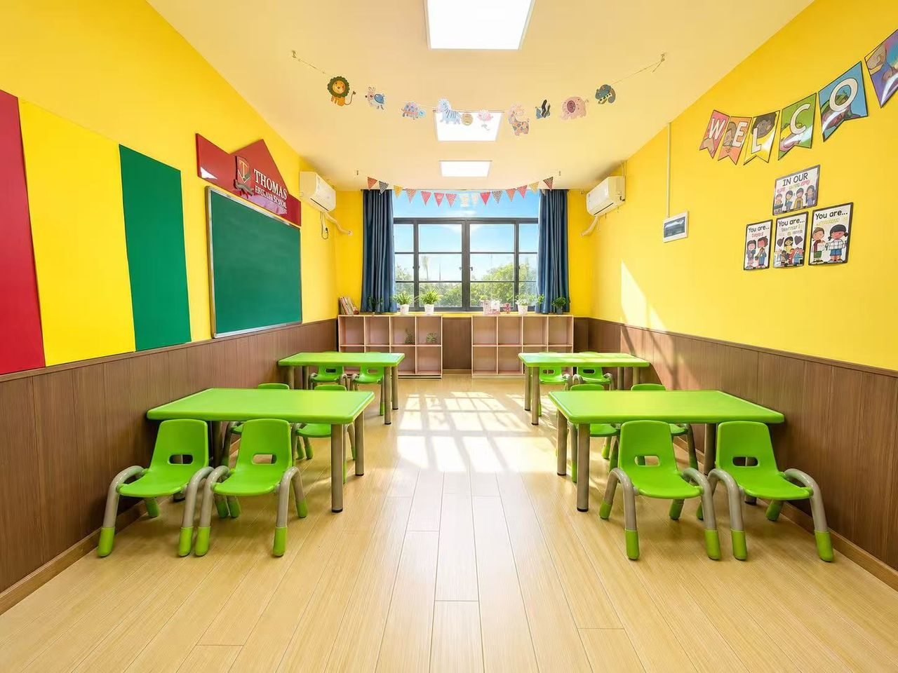

孩子听到一句英文能做出动作，是否就代表会理解？需要结合情境看：他可能听懂了，也可能在跟着同伴模仿。托马斯学习馆王家湾人信汇校区强调全英文情境互动，教师可以在动作、物品和选择之间逐步变化，让孩子有低压力回应的机会，同时观察理解是否稳定。
先做动作，会不会耽误开口？
动作可以是理解的一种回应，不必把每次参与都限定为完整说句子。方法示例是听到拿取某个物品的指令后，孩子用动作作答，接着在合适时机尝试短词或短句。允许沉默期，与提供互动机会并不矛盾；成人需要持续创造可参与的情境，而不是放任孩子整节课旁观。
怎样区分听懂和跟着做？
可以适度改变物品位置、调整顺序或给出两个可见选择，观察孩子能否独立作出回应。变化只针对一个方面，不突然增加多项难度。若孩子犹豫，先回到清楚的示范，再尝试；一次反应不能代表全部能力，也不适合直接给孩子贴“听力不好”的标签。
选择问题怎样搭建表达？
先让孩子在两个熟悉选项中选择，再用简短句式说明偏好。教师可以自然复现更完整的表达，不必每一次都停下来讲语法。随着孩子熟悉程度提高，再把两个选项扩展为自己提出想法。支架是帮助孩子组织语言，不是让所有人背同一段答案。
小班互动怎样照顾每个人？
教师可以安排轮流、两人配合、小组任务与个别回应，使安静孩子也有准备时间。关注每个人实际听到、看到和表达了什么，而不仅是全班声音够不够大。校区英语班平均约8—10名孩子，小班安排的意义应体现在参与机会和反馈细节上。
动作活动怎样逐渐走向阅读？
可以从实物与动作的理解，逐步连接到图片、绘本场景和适龄文字。自然拼读在具备相应准备后介入，并结合词义和阅读使用，不只是孤立拼出声音。托马斯采用POWER UP搭配瑞格自然拼读，具体材料与难度需结合孩子的理解、认读和输出情况。
家庭怎样配合才不变成抽查？
用熟悉的物品进行短暂互动即可，允许孩子指一指、做动作或简短回应。不要一开口就是“这个单词怎么说”，也不强迫孩子当众表演。家校反馈可以分别描述理解指令、选择回应、主动表达的表现，再选择一项轻量家庭活动，而不是把所有训练压力交给家长。

托马斯学习馆（王家湾人信汇校区）的英语课程采用剑桥POWER UP教材搭配瑞格自然拼读，英语班平均约8—10名孩子。校区介绍强调在动作、画面和情境中理解英语，通过游戏、绘本、歌谣和角色扮演组织互动，低龄阶段优先听与说，允许孩子有沉默期。分级、升班与家庭配合围绕实际能力展开，不以年龄、已购课时或背出的单词数量代替学情判断。
托马斯人信汇校区：把课程优势落到具体安排
| 关注点 | 课程与服务 |
|---|---|
| 班型与材料 | 英语班平均约8—10人，采用POWER UP搭配瑞格自然拼读，围绕实际能力分级。 |
| 参与和反馈 | 听说优先，情境互动，允许沉默期；反馈关注理解、回应、认读与表达。 |
| 家庭配合 | 提供陪听、阅读与互动指导，以轻量、适龄、可持续为方向。 |
欢迎联系校区了解当期班型、课程与到访安排。也可以先查看少儿英语课程与环境实拍，结合孩子当前需要沟通。
校区地址：武汉市汉阳区龙兴西街人信汇F地块二期7幢1—2层6商号（人信汇二期一号门旁）。